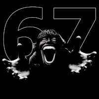
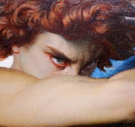
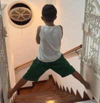

Farmar aura é uma gíria da internet que mistura o verbo "farmar" com "aura".
Farmar aura significa adotar atitudes, poses ou gestos propositalmente para transmitir estilo, confiança e moral com os outros, tentando acumular admiração ou prestígio social.
Para "farmar aura" (acumular pontos fictícios de carisma, estilo e moral diante dos outros), a lógica é adotar atitudes que transmitam confiança, calma absoluta ou um toque de drama/mistério na hora certa.
Manter a compostura: Ficar completamente calmo em situações em que todos entram em pânico ou se irritam (como um imprevisto na escola ou no trabalho) transmite uma presença dominante.
Respostas curtas e precisas: Evitar dar justificativas longas. Dar uma resposta certeira e manter o olhar passa firmeza.
Linguagem corporal ereta: Caminhar com postura firme, ombros para trás e passos calmos, sem parecer que está com pressa.
Contato visual sem exageros: Olhar nos olhos das pessoas ao falar e ao escutar, demonstrando que você está no controle da conversa.
Não reagir exageradamente: Não tentar provar nada para ninguém. O desapego pela opinião alheia é considerado o maior "gerador de aura".
Acertos "sem olhar": Acertar um papel na lixeira sem olhar, pegar algo caindo no ar de forma natural ou resolver algo difícil sem esforço aparente.
Estilo e estética: Usar roupas com as quais você se sinta confortável e confiante, mantendo um estilo próprio bem definido.
Nas redes sociais (como TikTok e Instagram), "farmar aura" também virou meme. Para participar dos vídeos ou brincadeiras com amigos:
Faça poses dramáticas ou cômicas diante de situações aleatórias.
Interrompa uma caminhada comum com uma entrada estilosa ou uma virada de cabeça dramática.
Peça para seus amigos darem uma "nota de aura" de -10.000 a +10.000 para a sua atitude.


